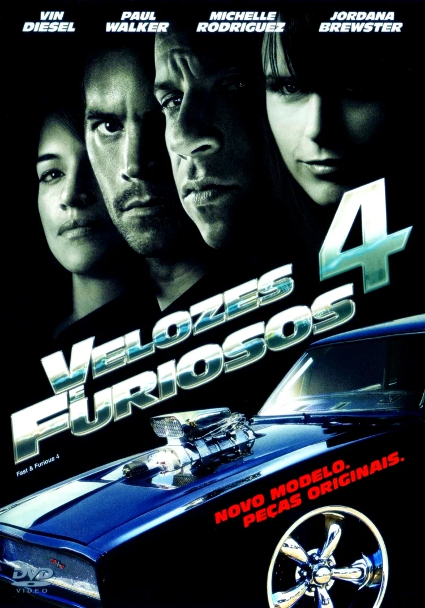

A saga Velozes e Furiosos é uma série de filmes de ação que começou em 2001 e se tornou um fenômeno global, conhecida por suas cenas de alta velocidade, acrobacias impressionantes e um elenco carismático
Principais atores
Vin Diesel
Vin Diesel é o rosto mais icônico da franquia, interpretando Dominic Toretto, o líder da gangue de corredores de rua e o pilar central da história. Seu personagem é conhecido por sua habilidade ao volante e por sua lealdade à família.
Paul Walker
Paul Walker interpretou Brian O'Conner, o policial disfarçado que se torna um membro crucial da equipe de Dominic. Seu personagem é um dos favoritos dos fãs e foi central em vários filmes até a trágica morte de Walker em 2013.
Dwayne Johnson
Dwayne "The Rock" Johnson se juntou à franquia em Velozes e Furiosos 5 - Operação Rio como Luke Hobbs, um agente da lei que eventualmente se torna um aliado dos protagonistas. Seu personagem trouxe um novo nível de ação e intensidade à série.
Velozes e Furiosos (2001)
O primeiro filme introduz Dominic Toretto (Vin Diesel), um piloto de rua e chefe de uma gangue de corredores de rua, e Brian O'Conner (Paul Walker), um policial disfarçado que investiga um grupo de roubos de caminhões. Brian se infiltra na gangue de Dominic e acaba se envolvendo com sua irmã, Mia (Jordana Brewster), e com o mundo das corridas de rua
Velozes e Furiosos 2 - Operação Miami (2003)
Neste filme, Brian O'Conner está fugindo da lei e se muda para Miami, onde se junta a um amigo para derrubar um traficante de drogas local. Ele usa suas habilidades em corridas de rua e carros modificados para ajudar na missão.
Velozes e Furiosos 3 - Desafio em Tóquio (2006)
A história muda de cenário e se passa em Tóquio. Sean Boswell (Lucas Black) é um jovem que se envolve na cultura de corridas de drift. O filme explora novas técnicas de corrida e a cultura japonesa do automobilismo.
Velozes e Furiosos 4 (2009)

Velozes e Furiosos 4 (2009)
Dominic Toretto e Brian O'Conner se reencontram. Juntos, eles buscam um traficante de drogas que é responsável pela morte de alguém próximo a Dominic. O filme marca o retorno da franquia às suas raízes de corrida e ação intensa.
Velozes e Furiosos 5 - Operação Rio (2011)
O filme se passa no Rio de Janeiro, onde Dominic e Brian formam uma equipe para realizar um grande roubo de um poderoso criminoso. A história expande o foco para uma equipe diversificada, incluindo personagens dos filmes anteriores.